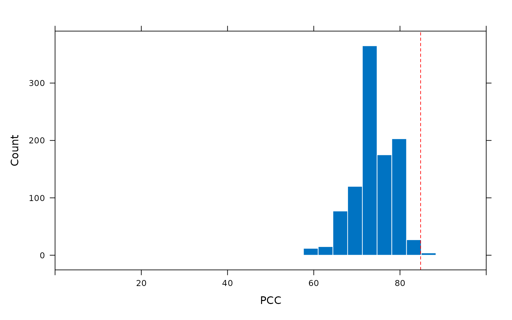

mod <- club(width ~ location, data = jellyfish)
summary(mod)
#> ********** Classification Results **********
#> Observations: 46
#> Missing observations: 0
#> Target groups: 2
#> Correctly classified observations: 39
#> Incorrectly classified observations: 7
#> Ambiguously classified observations: 0
#> PCC: 84.78
#> Median classification strength index: 1
#>
#> ********** Randomisation Test **********
#> Random reorderings: 1000
#> Minimum random PCC: 47.83
#> Maximum random PCC: 89.13
#> Chance-value: 0.01
#>
#> individual observation target prediction accuracy csi
#> 1 1 6.0 Dangar Island Dangar Island correct 1.00
#> 2 2 6.5 Dangar Island Dangar Island correct 1.00
#> 3 3 6.5 Dangar Island Dangar Island correct 1.00
#> 4 4 7.0 Dangar Island Dangar Island correct 1.00
#> 5 5 7.0 Dangar Island Dangar Island correct 1.00
#> 6 6 7.0 Dangar Island Dangar Island correct 1.00
#> 7 7 8.0 Dangar Island Dangar Island correct 1.00
#> 8 8 8.0 Dangar Island Dangar Island correct 1.00
#> 9 9 8.0 Dangar Island Dangar Island correct 1.00
#> 10 10 8.0 Dangar Island Dangar Island correct 1.00
#> 11 11 9.0 Dangar Island Dangar Island correct 1.00
#> 12 12 10.0 Dangar Island Dangar Island correct 1.00
#> 13 13 11.0 Dangar Island Dangar Island correct 1.00
#> 14 14 11.0 Dangar Island Dangar Island correct 1.00
#> 15 15 11.0 Dangar Island Dangar Island correct 1.00
#> 16 16 12.0 Dangar Island Dangar Island correct 0.78
#> 17 17 13.0 Dangar Island Dangar Island correct 0.78
#> 18 18 14.0 Dangar Island Salamander Bay incorrect 0.85
#> 19 19 15.0 Dangar Island Salamander Bay incorrect 0.85
#> 20 20 15.0 Dangar Island Salamander Bay incorrect 0.85
#> 21 21 15.0 Dangar Island Salamander Bay incorrect 0.85
#> 22 22 16.0 Dangar Island Salamander Bay incorrect 0.97
#> 23 23 12.0 Salamander Bay Dangar Island incorrect 0.78
#> 24 24 13.0 Salamander Bay Dangar Island incorrect 0.78
#> 25 25 14.0 Salamander Bay Salamander Bay correct 0.85
#> 26 26 14.0 Salamander Bay Salamander Bay correct 0.85
#> 27 27 15.0 Salamander Bay Salamander Bay correct 0.85
#> 28 28 15.0 Salamander Bay Salamander Bay correct 0.85
#> 29 29 15.0 Salamander Bay Salamander Bay correct 0.85
#> 30 30 15.0 Salamander Bay Salamander Bay correct 0.85
#> 31 31 15.0 Salamander Bay Salamander Bay correct 0.85
#> 32 32 15.0 Salamander Bay Salamander Bay correct 0.85
#> 33 33 16.0 Salamander Bay Salamander Bay correct 0.97
#> 34 34 16.0 Salamander Bay Salamander Bay correct 0.97
#> 35 35 16.0 Salamander Bay Salamander Bay correct 0.97
#> 36 36 16.0 Salamander Bay Salamander Bay correct 0.97
#> 37 37 16.0 Salamander Bay Salamander Bay correct 0.97
#> 38 38 16.5 Salamander Bay Salamander Bay correct 1.00
#> 39 39 17.0 Salamander Bay Salamander Bay correct 1.00
#> 40 40 18.0 Salamander Bay Salamander Bay correct 1.00
#> 41 41 18.0 Salamander Bay Salamander Bay correct 1.00
#> 42 42 18.0 Salamander Bay Salamander Bay correct 1.00
#> 43 43 19.0 Salamander Bay Salamander Bay correct 1.00
#> 44 44 19.0 Salamander Bay Salamander Bay correct 1.00
#> 45 45 20.0 Salamander Bay Salamander Bay correct 1.00
#> 46 46 21.0 Salamander Bay Salamander Bay correct 1.00
plot(mod)
predict(mod)
#> [1] "Dangar Island" "Dangar Island" "Dangar Island" "Dangar Island"
#> [5] "Dangar Island" "Dangar Island" "Dangar Island" "Dangar Island"
#> [9] "Dangar Island" "Dangar Island" "Dangar Island" "Dangar Island"
#> [13] "Dangar Island" "Dangar Island" "Dangar Island" "Dangar Island"
#> [17] "Dangar Island" "Salamander Bay" "Salamander Bay" "Salamander Bay"
#> [21] "Salamander Bay" "Salamander Bay" "Dangar Island" "Dangar Island"
#> [25] "Salamander Bay" "Salamander Bay" "Salamander Bay" "Salamander Bay"
#> [29] "Salamander Bay" "Salamander Bay" "Salamander Bay" "Salamander Bay"
#> [33] "Salamander Bay" "Salamander Bay" "Salamander Bay" "Salamander Bay"
#> [37] "Salamander Bay" "Salamander Bay" "Salamander Bay" "Salamander Bay"
#> [41] "Salamander Bay" "Salamander Bay" "Salamander Bay" "Salamander Bay"
#> [45] "Salamander Bay" "Salamander Bay"
accuracy(mod)
#> [1] "correct" "correct" "correct" "correct" "correct" "correct"
#> [7] "correct" "correct" "correct" "correct" "correct" "correct"
#> [13] "correct" "correct" "correct" "correct" "correct" "incorrect"
#> [19] "incorrect" "incorrect" "incorrect" "incorrect" "incorrect" "incorrect"
#> [25] "correct" "correct" "correct" "correct" "correct" "correct"
#> [31] "correct" "correct" "correct" "correct" "correct" "correct"
#> [37] "correct" "correct" "correct" "correct" "correct" "correct"
#> [43] "correct" "correct" "correct" "correct"
pcc(mod)
#> [1] 84.78261
cval(mod)
#> [1] 0.014
plot(pcc_replicates(mod))